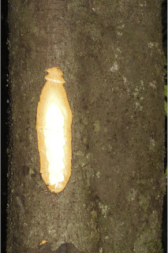
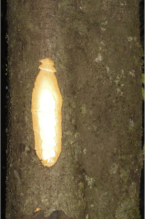
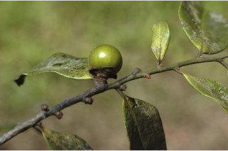
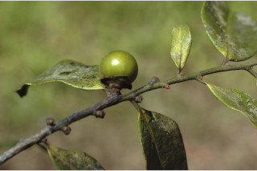

Trees up to 20 m.
20 ಮೀ. ಎತ್ತರದವರೆಗೆ ಬೆಳೆಯುವ ಮರಗಳು.
20 മീറ്റര് വരെ ഉയരത്തില് വളരുന്ന മരങ്ങള്.
மரம், 20 மீ. உயரம் வரை வளரக்கூடியது
Bark black.
ತೊಗಟೆ ಕಪ್ಪು ಬಣ್ಣದಲ್ಲಿರುತ್ತದೆ.
കറുത്ത നിറത്തിലുളള പുറംതൊലി.
மரத்தின் பட்டை கருப்பு நிறமுடையது.
Young branchlets terete, densely rufous tomentose; apical and axillary buds densely ferruginous tomentose.
ಎಳೆಯ ಕಿರುಕೊಂಬೆಗಳು ದುಂಡಾಗಿದ್ದು ಕೆಂಗಂದು ಬಣ್ಣವುಳ್ಳ ಮೃದುತುಪ್ಪಳದಿಂದ ಕೂಡಿರುತ್ತವೆ.; ಅಗ್ರದಲ್ಲಿನ ಹಾಗು ಅಕ್ಷಾಕಂಕುಳಿನಲ್ಲಿನ ಕುಡಿಮೊಗ್ಗುಗಳು ದಟ್ಟವಾದ,ಕಿಲುಬು ಬಣ್ಣದ ಮೃದುತುಪ್ಪಳದಿಂದ ಕೂಡಿರುತ್ತವೆ.
കനത്ത റൂഫസ് രോമിലമായ ഇളം ഉപശാഖകള് ഉരുണ്ടതാണ്; അഗ്രമുകുളവും കക്ഷ്യമുകുളവും കനത്തില് തുരുമ്പന് രോമിലമാണ്.
சிறிய நுனிக்கிளைகள் குறுக்குவெட்டுத் தோற்றத்தில் வளையமானது, அடர்த்தியான பொன் நிறமான உரோமங்களுடையது; நுனி மற்றும் தண்டின் பக்கவாட்டிலும் காணப்படும் மொட்டு அடர்த்திய பொன் நிறமான உரோமங்களுடையது.
Leaves simple, alternate, distichous; petiole to 0.6-1.0 cm long, canaliculate, glabrous when old; lamina 6.5-18 x 2-4.5 cm usually narrow elliptic to narrow oblong, sometimes oblanceolate, apex bluntly acute to acuminate, base acute to attenuate, margin reflexed at least near base, coriaceous, densely ferruginous tomentose on both surface when young, later glabrous; midrib canaliculate above; secondary_nerves 6-9 pairs, ascending, not prominent; tertiary_nerves obscure.
ಎಲೆಗಳು ಸರಳವಾಗಿದ್ದು ಪರ್ಯಾಯ ಹಾಗೂ ಸುತ್ತು ಜೋಡನಾ ವ್ಯವಸ್ಥೆ ಯಲ್ಲಿದ್ದು ಕಾಂಡದ ಎರಡೂ ಕಡೆಯ ಎದುರು ಬದರಿನ ಸಾಲಿನಲ್ಲಿರುತ್ತವೆ; ಎಲೆ ತೊಟ್ಟುಗಳು 0.6 -1.0 ಸೆಂಮೀ.ಉದ್ದವಿದ್ದು ಕಾಲುವೆಗೆರೆ ಸಮೇತವಿರುತ್ತವೆ ಹಾಗೂ ಬಲಿತಾಗ ರೊಮರಹಿತವಾಗಿರುತ್ತವೆ; ಪತ್ರಗಳು 6.5 – 18 X 2 – 4.5 ಸೆಂ.ಮೀ. ಗಾತ್ರ, ಸಾಧಾರಣವಾಗಿ ಸಂಕುಚಿತ ಅಂಡವೃತ್ತ ಕೆಲವು ವೇಳೆ ಬುಗುರಿ-ಭರ್ಜಿಯ ಆಕಾರ, ಮೊಂಡಾದ ಅಗ್ರವುಳ್ಳ ಚೂಪಾದ ಅಥವಾ ಕ್ರಮೇಣ ಚೂಪಾಗುವ ತುದಿ ; ಚೂಪಾದುದರಿಂದ ಒಳಬಾಗಿದ ಬುಡವನ್ನು ಹೊಂದಿರುತ್ತವೆ;ಪತ್ರದ ಅಂಚು ಕಡೇ ಪಕ್ಷ ಬುಡದ ಬಳಿಯಲ್ಲಾದರೂ ಹಿಂಸುರುಳಿಯಾಗಿರುತ್ತದೆ; ಮೇಲ್ಮೈ ತೊಗಲವನ್ನೋಲುವ ಮಾದರಿಯಲ್ಲಿರುತ್ತದೆ, ಪತ್ರಗಳು ಎಳೆಯದಾಗಿದ್ದಾಗ ಎರಡೂ ಬದಿ ತುಕ್ಕಿನ ಬಣ್ಣವುಳ್ಳ ದಟ್ಟ ಮೃದುತುಪ್ಪಳದಿಂದ ಕೂಡಿರುತ್ತವೆ, ಬಲಿತ ನಂತರ ರೋಮರಹಿತವಾಗುತ್ತವೆ; ಮಧ್ಯನಾಳ ಪತ್ರದ ಮೇಲ್ಭಾಗದಲ್ಲಿ ಕಾಲುವೆಗೆರೆ ಸಮೇತವಿರುತ್ತದೆ;ಎರಡನೇ ದರ್ಜೆಯ ನಾಳಗಳು ಅಂದಾಜು 6-9 ಜೋಡಿಗಳಿರುತ್ತವೆ ಹಾಗೂ ಆರೋಹಣ ಮಾದರಿಯಲ್ಲಿದ್ದು ಪ್ರಮುಖವಾಗಿರುದಿಲ್ಲ ; ಮೂರನೇ ದರ್ಜೆಯ ನಾಳಗಳು ಅಸ್ಪಷ್ಟ.
ലഘുവായ ഇലകള്, ഏകാന്തരമായി, തണ്ടിന്റെ രണ്ടുഭാഗത്ത് മാത്രമായടുക്കിയിരിക്കുന്നു; മൂക്കുമ്പോള് അരോമിലമാകുന്ന, ചാലോട്കൂടിയ ഇലഞെട്ടിന് 0.6 സെ.മീ മുതല് 1 സെ.മീ വരെ നീളം; പത്രഫലകത്തിന് 6.5 സെ.മീ മുതല് 1.8 സെ.മീ വരെ നീളവും 2 സെ.മീ മുതല് 4.5 സെ.മീ വരെ വീതിയും, സാധാരണയായി വീതികുറഞ്ഞ ദീര്ഘവൃത്തംതൊട്ട് വീതികുറഞ്ഞ ആയതാകാരംവരെയാണ്, ചിലപ്പോള് അപകുന്താകൃതിയായിരിക്കും, പത്രാഗ്രം മുനപ്പില്ലാത്ത നിശിതാഗ്രം തൊട്ട് ദീര്ഘാഗ്രംവരെയാകാം, പത്രാധാരം നിശിതംതൊണ്ട് നീണ്ട് നേര്ത്തവസാനിക്കുന്നതുവരെയാകാം, അരികുകള് കീഴറ്റത്തിലെങ്കിലും മടങ്ങിയിരിക്കും, ചര്മ്മിലപ്രകൃതം, ഇളതായിരിക്കുമ്പോള് ഇരുഭാഗത്തും കനത്തില് തുരുമ്പന് രോമിലമാണ്, പിന്നീട് അരോമിലമാണ്; മുഖ്യസിര മുകളില് ചാലോട് കൂടിയതാണ്, ഏറെ വ്യക്തമല്ലാത്ത, ആരോഹണക്രമത്തിലുളള 6 മുതല് 9 വരെ ജോഡി ദ്വിതീയ ഞരമ്പുകള്; ത്രിതീയ ഞരമ്പുകള് അപ്രസക്തമാണ്.
இலைகள் தனித்தவை, மாற்றுஅடுக்கமானவை, இருநெடுக்கு வரிசையிலையடுக்கம் (டைஸ்டிக்கஸ்); இலைக்காம்பு 0.6-1 செ.மீ. நீளமானது, குறுக்குவெட்டுத் தோற்றத்தில் கேனாலிகுலேட், முதிர்ந்த காம்பு உரோமங்களற்றது; இலை அலகு 6.5-18 X 2-4.5 செ.மீ., பொதுவாக குறுகிய நீள்வட்டம் முதல் குறுகிய நீள்சதுரம், சிலவற்றில் தலைகீழ் ஈட்டி வடிவமுடையது, அலகின் நுனி மழுங்கிய முனை முதல் வால் போன்று நீண்டது, அலகின் தளம் கூரியது முதல் அட்டனுவேட், அலகின் விளிம்பு, தளப்பகுதியில் சற்று மேல் நோக்கி வளைந்து காணப்படும், கோரியேசியஸ், இளம்இலைகளின் இருபரப்பிலும் பொன் நிறமான உரோமங்களுடையது, முதிர்ந்த இலைகள் உரோமங்களற்றது; மையநரம்பு அலகின் மேற்பரப்பில் பள்ளமானது; இரண்டாம் நிலை நரம்புகள் 6-9 ஜோடிகள், தெளிவற்றவை; மூன்றாம் நிலை நரம்புகள் தெளிவற்றவை.
Flowers unisexual, yellowish white; male flowers in axillary cymes; female solitary, axillary.
ಹೂಗಳು ಏಕ ಲಿಂಗಿಗಳಾಗಿದ್ದು ಹಳದಿ ಮಿಶ್ರಿತ ಬಿಳಿ ಬಣ್ಣದವು; ಗಂಡು ಹೂಗಳು ಅಕ್ಷಾಕಂಕುಳಿನಲ್ಲಿನ ಮಧ್ಯಾರಂಭಿ ಪುಷ್ಪಮಂಜರಿಯಲ್ಲಿರುತ್ತವೆ; ಹೆಣ್ಣು ಹೂಗಳು ಅಕ್ಷಾಕಂಕುಳಿನಲ್ಲಿ ಒಂಟಿಯಾಗಿರುತ್ತವೆ.
മഞ്ഞകലര്ന്ന വെളുത്തനിറത്തിലുളള പൂക്കള് ഏകലിംഗികളാണ്; ആണ് പൂക്കള് കക്ഷീയ സൈമുകളിലുണ്ടാകുന്നു, പെണ്പൂക്കള് ഒറ്റക്കായി കക്ഷ്യങ്ങളിലുണ്ടാകുന്നു.
ஓர்பால் மலர்கள்; மஞ்சள் கலந்த வெள்ளை நிறமுடையது; ஆண்மலர்கள் இலைக்கோணங்களில் காணப்படும் சைம்; பெண்மலர்கள் தனித்தவை, இலைக்கோணங்களில் காணப்படும்.
Berry globose, to 2.5 cm across, fruiting_calyx with reflexed margin; seeds 8, smooth.
ಬೆರ್ರಿಗಳು ದುಂಡಾಕಾರದಲ್ಲಿದ್ದು 2.5 ಸೆಂ.ಮೀ. ವ್ಯಾಸ ಹೊಂದಿರುತ್ತವೆ, ಕಾಯಿಗಳ ಪುಷ್ಪಪಾತ್ರೆ ಹಿಂಸುರುಳಿಯುಳ್ಳ ಅಂಚಿನ ಮೇತವಿರುತ್ತದೆ. ಹಾಗೂ ನಯವಾದ 8 ಬೀಜಗಳನ್ನೊಳಗೊಂಡಿರುತ್ತವೆ.
മിനുസമുളള 8 വിത്തുകളുളള കായ, 2.5 സെ.മീ വരെ കുറുകേയുളള ഗോളാകാരബെറിയാണ്, കായോട് ചേര്ന്നുനില്ക്കുന്ന ബാഹ്യദളങ്ങള് പിന്നാക്കം വളഞ്ഞഅരികുകളോടെയാണ്.
முழுச்சதைகனி (பெர்ரி), உருண்டையானது 2.5 செ.மீ. வரை குறுக்களவுடையது, நிரந்தரமான புல்லி இதழ்கள் வளைந்த விளிம்பை கொண்டது; 8 விதைகளையுடையது, வழுவழுப்பானது.
 



 
